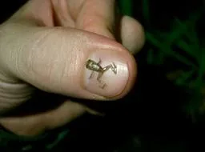

Blog · March 19, 2012
#lifebonus
What makes you excited to be alive?

Open-ended questions like the one above light me up. I personally love it when people lay out the ideas they are passionate about and then explore how and why those ideas matter. Would you like to be asked “What’s the most curious thing you have discovered recently?” more often? I would. Hopefully this post will inspire you to surprise someone with a delightful chance to share who they are and enlighten you in the process. It’s relatively easy: ask a good question.
About 48 hours ago I sent the following email to a few friends:
This is more than inbox entertainment. I think it actually helps me get to know a person along the lines of what’s important and how he or she spends free time. What matters to you?Hey! I hope you’re well! This is for fun/how I’ve decided to keep Friday Fresh.
Reply inline and I will subsequently send fresh shit from my end. It’s important to note that when you successfully answer these challenges you, friend, get a life bonus!! Seriously, it will make your day rock.
– Most interesting thing you’ve discovered in the past 10 days (if it’s too hard to choose, share up to 3) – Most beautiful image/video from past month – Best meal or food from the past month – Did you learn a new word in the past month? Share. If not, go find one. – Funniest/most entertaining. “Find out what is to be taken seriously and laugh at the rest” -Herman Hesse That’s all. You have 48 hours to reply. Good luck! For fun/inbox entertainment Amy
“Such as are your constant thoughts, such will be the character of your mind” Marcus AureliusFrom here on out, this post is crowd-sourced. Every video, image, link, quote and fact was “recruited” by the above email. I hope you enjoy this fresh broad collective perspective that materialized over the weekend.
-
Most Beautiful Image/Video
a story for tomorrow
Rediscovered classic
que bellathere and back: space
NASA releases epic panorama of night sky made from 18,000 images.
This slideshow requires JavaScript.
-
Most interesting thing you’ve learned/discovered
Nat Geo’s Friday Fact: A hurricane weighs as much as 160 million rhinos!
How to divide a square equally into 5 parts.
“Triggered by Brené Brown’s talk about shame I discovered some things about myself.
I discovered that fears and insecurities can be layered and that if you’ve successfully stripped away one layer you may discover another one underneath.
Unfortunately, I am not always aware which fears and insecurities I really have.”
“That the technology for taking a blood sugar reading on an iPhone is being developed.”
ChronoZoom beta is out!
Sexually rejected mice turn to booze.
“Offer a male fruit fly a choice between food soaked in alcohol and its nonalcoholic equivalent, and his decision will depend on whether he’s mated recently or been rejected by a female. Flies that have been given the cold shoulder are more likely to go for the booze, researchers have found. It’s the first discovery, in fruit flies, of a social interaction that influences future behavior.”
Wild lions up close with the Beetle Cam.
Shark teeth are essentially modified scales and evolved from skin, not bones (right, sharks are cartilaginous; they don’t have bones).
“No matter how much you plan, you’ll always face something totally unexpected.”
True. Perspective on embracing the unanticipated with delight from a different person:
“I have no idea where I’m going, I’m totally conflicted and I’ve never been happier or more flipped out.”
-
New words
awesomeness
bitumen – the pronunciation is awesome. It’s a synonym for asphalt.
buckram – 1. A coarse cotton fabric heavily sized with glue, used for stiffening garments and in bookbinding. 2. Archaic Rigid formality
coqui – teeny nocturnal frog 

dongleflump – “not sure about a new word but I make lots up, like this one.” Define for yourself, world!
entelechy -In the philosophy of Aristotle, the condition of a thing whose essence is fully realized
LTE – (4G phone network) means Long Term Evolution
pedantic – overly concerned with minute details or formalisms
plumbeo- (Spanish word) sad, slow, opaque. “It is like the colour of the sky in winter.”
sycophant – A person who acts obsequiously toward someone in order to gain advantage; a servile flatterer.
wish – “I had forgotten what it meant. I know now.”
What is the last new word you learned?
-
Best recent nomnoms
I ate fruit roll-ups with a girl I had just net a few days before, she looked at me and smiled and I felt like a teenager.
mom’s chicken pot pie; a private restaurant in Bogota, Columbia; Portuguese food: Rice with octopus and red wine; dinner with Hans Rosling on Wednesday; sukiyaki; Silk City Diner pork tacos; pork chop at vinotinis; fish tacos at Tacombi NYC; some beef mince thing at a party (I have no idea what it was); oven roasted Red Drum fish fillet with kai lan; butternut squash, pasta and a preserved lemon saffron sauce; dinner at an Australian restaurant near Amsterdam; Brenda’s soul food; dinner in Philly two weekends ago on a pitstop before I came home to Switzerland.
Catching up with friends and sharing stories and challenging each other to think critically on a wide range of topics.
-
funny+entertaining
“Went to my grandmothers 80th birthday party, which for most 80 year olds means a nice little party with family and friends. Now for my grandmother, who happens to be the owner of 4 Gentleman’s clubs in NYC..her friends are well interesting.”
Demoreel for visual effects studio The Mill
“If camping outside is so great, then why are all of the bugs trying to get into my house. “- Jim Gaffigan
When was the last time you got this excited when you heard a new song? 🙂
“My kids listening to Toy Dolls”

Portraits imagining a baby’s future profession.
Books on Amazon:
That is all. John Hodgman
“The Fan“, Eric Bogosian (comedy)
-
anything else?
“48 days until I graduate from Penn State. No sure exactly what’s going to happen in the next 48, but I know it’s going to be crazy.”
What are you doing with the next 48 days of your life?
Try something different. Do new. Ask open-ended questions. Instigate surprise. Play. Explore the world and minds around you. And feel free to answer the questions below or post your own question in the comments section. Or tweet interestingnesses with the hash tag #lifebonus to @amyleerobinson.
– Most interesting thing you’ve discovered in the past 10 days (if it’s too hard to choose, share up to 3) – Most beautiful image/video from past month – Best meal or food from the past month – Did you learn a new word in the past month? Share. If not, go find one. – Funniest/most entertaining. “Find out what is to be taken seriously and laugh at the rest” -Herman Hesse
Kudos to Antonella Broglia (Madrid), Jon Yeo (Melbourne), John Eberhart (Huntsville, USA), Dave Lim (Singapore), Marconi Pereria (Rio de Janeiro), Lisa Nicole Bell (Los Angeles), Steve Garaguilo (Zurich), Hugo Schotman (Zurich), Evan Grant (London), Brad Garland (Huntsville), Philip Kovacs (Huntsville), Dylan Finelli (Boston), Zach Zimbler (Penn State), Lionel Felix (Austin TX), Dan Jacob (Toronto), Shreenath Regunathan (San Francisco), and Sean Gourley (San Francisco). This post is friend-sourced.
First published on my old blog, amyrobinson.wordpress.com, March 19, 2012.